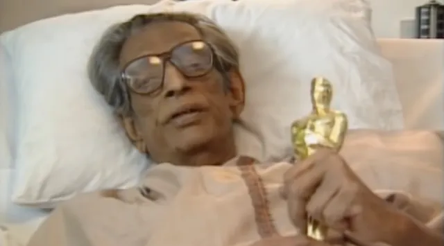

Awards and Honors
In 1978, the organising committee of the Berlin Film Festival ranked Satyajit Ray as one of the three all-time best directors.
In 1992, Satyajit Ray received the honorary Academy Award ©A.M.P.A.S. ® - Lifetime Achievement - “In recognition of his rare mastery of the art of motion pictures and for his profound humanitarian outlook, which has had an indelible influence on filmmakers and audiences throughout the world.”
Other honours include “Lègion d'Honneur”, France and “Bharatratna” (Jewel of India), India.
Satyajit Ray received numerous awards, both for personal achievements as a filmmaker and for the films he made.

- Personal Awards
- Padmashree, India, 1958
- Padmabhushan, India, 1965
- Magasaysay Award, Manila, 1967
- Star of Yugoslavia, 1971
- Doctor of Letters, Delhi University, 1973
- D. Litt., Royal College of Arts, London, 1974
- Padmabibhushan, India, 1976
- D. Litt., Oxford University, 1978
- Special Award, Berlin Film Festival, 1978
- Deshikottam, Visva-Bharati University, India, 1978
- Special Award, Moscow Film Festival, 1979
- D. Litt., Burdwan University, India, 1980
- D. Litt., Jadavpur University, India, 1980
- Doctorate, Benaras Hindu University, India, 1981
- D. Litt., North Bengal University, India, 1981
- Hommage à Satyajit Ray, Canes Film Festival, 1982
- Special Golden Lion of St. Mark, Venice Film Festival, 1982
- Vidyasagar Award, Govt. of West Bengal, 1982
- Fellowship, The British Film Institute, 1983
- D. Litt., Calcutta University, India, 1985
- Dadasaheb Phalke Award, India, 1985
- Soviet Land Nehru Award, 1985
- Fellowship, Sangeet Natak Academy, India, 1986
- Légion d’Honneur, France, 1987
- D. Litt., Rabindra Bharati University, India, 1987
- Oscar for Lifetime Achievement, USA, 1992
- Bharatratna, India, 1992
- Awards for Films
- Pather Panchali (Song of the Little Road), 1955
- President’s Gold & Silver Medals, New Delhi, 1955
- Best Human Document, Cannes, 1956
- Diploma Of Merit, Edinbugh, 1956
- Vatican Award, Rome, 1956
- Golden Carbao, Manila, 1956
- Best Film and Direction, San Francisco, 1957
- Selznik Golden Laurel, Berlin, 1957
- Best Film, Vancouver, 1958
- Critics’ Award – Best Film, Stratford, Canada, 1958
- Best Foreign Film, New York, 1959
- Kinema Jumpo Award: Best Foreign Film, Tokyo, 1966
- Bodil Award: Best Non-European Film of the Year, Denmark, 1966
- Aparajito (The Unvanquished), 1956
- Golden Lion of St. Mark, Venice, 1957
- Cinema Nuovo Award, Venice, 1957
- Critics Award, Venice, 1957
- FIPRESCI Award, London, 1957
- Best Film and Best Direction, San Francisco, 1958
- International Critic’ Award, San Francisco, 1958
- Golden Laurel for Best Foreign Film of 1958-59, USA
- Selznik Golden Laurel, Berlin, 1960
- Bodil Award: Best Non-European Film of the Year, Denmark, 1967
- Jalsaghar (The Music Room), 1958
- President’s Silver Medal, New Delhi, 1959
- Silver Medal for Music, Moscow, 1959
- Apur Sansar (The World Of Apu), 1959
- President’s Gold Medal, New Delhi, 1959
- Sutherland Award for Best Original And Imaginative Film, London, 1960
- Diploma Of Merit, 14th International Film Festival, Edinburgh, 1960
- Best Foreign Film, National Board of Review of Motion Pictures, USA, 1960
- Apu Trilogy (Pather Panchali, 1955; Aparajito, 1956; Apur Sansar, 1959)
- Wington Award for each film, London Festival, 1980
- Devi (The Goddess), 1960
- President’s Gold Medal, New Delhi, 1961
- Teen Kanya (Three Daughters / Two Daughters), 1961
- President’s Silver Medal, New Delhi, 1961 (for Samapti)
- Golden Boomerang, Melbourne, 1962 (for the Two Daughters)
- Selznik Golden Laurel Award, Berlin, 1963
- Rabindranath Tagore (Documentary Film), 1961
- President’s Gold Medal, New Delhi, 1961
- Golden Seal, Locarno, 1961
- Special Mention, Montevideo, 1962
- Abhijan (The Expedition), 1962
- President’s Silver Medal, New Delhi, 1962
- Mahanagar (The Big City), 1963
- Certificate of Merit, New Delhi, 1964
- Silver Bear For Best Direction, Berlin, 1964
- Charulata (The Lonely Wife), 1964
- President’s Gold Medal, New Delhi, 1964
- Silver Bear For Best Direction, Berlin, 1965
- Catholic Award, Berlin, 1965
- Best Film, Acapulco, 1965
- Nayak (The Hero), 1966
- Best Screenplay and Story, New Delhi, 1967
- Critics’ Prize (Unicrit Award), Berlin, 1966
- Special Jury Award, Berlin, 1966
- Chiryakhana (The Zoo), 1967
- Best Direction, West Bengal Government, 1968
- Goopy Gyne Bagha Byne (The Adventures of Goopy and Bagha), 1968
- Award for Best Direction, New Delhi, 1968
- President’s Gold and Silver Medals, New Delhi, 1970
- Silver Cross, Adelaide, 1969
- Best Director, Auckland, 1969
- Merit Award, Tokyo, 1970
- Best Film, Melbourne, 1970
- Pratidwandi (The Adversary), 1970
- Special Award, New Delhi, 1971
- President’s Silver Medal, New Delhi, 1971
- Seemabaddha (Company Limited), 1971
- President’s Gold Medal, New Delhi, 1972
- PIPRESCI Award, Venice, 1972
- The Inner Eye, 1972
- President’s Gold Medal, New Delhi, 1974
- Asani Sanket (Distant Thunder), 1973
- Presidents Gold Medal for Music Direction, New Delhi, 1973
- Best Regional Film, New Delhi, 1973
- Golden Bear, Berlin, 1973
- Golden Hugo, Chicago, 1974
- Sonar Kella (The Golden Fortress), 1974
- President’s Silver Medal, Best Screenplay, Direction, New Delhi, 1974
- Best Film, Direction and Screenplay, Government of West Bengal, 1974
- Best Feature Film for Children and Young Adults, Tehran, 1975
- Jana Aranya (The Middleman), 1975
- Best Direction, New Delhi, 1975
- Best Film, Direction, Screenplay, Government of West Bengal, 1975
- Karlovy Vary Prize, 1976
- Shatranj Ke Khilari (The Chess Players), 1977
- Best Feature Film in Hindi, New Delhi, 1977
- Best Color Photography, New Delhi, 1977
- Joi Baba Felunath (The Elephant God), 1978
- Best Children’s Film, New Delhi, 1978
- Best Feature Film, Hong Kong Film Festival, 1979
- Hirak Rajar Deshe (The Kingdom of Diamonds), 1980
- Best Music, Director, New Delhi, 1980
- Best Lyrics, New Delhi, 1980
- Special Award, Cyprus, 1984
- Sadgati (Deliverance), 1981
- Special Jury Award, New Delhi, 1981
- Ghare-Baire (The Home and the World), 1984
- Best Bengali Film, New Delhi, 1984
- Best Costume Design, New Delhi, 1984
- Ganashatru (An Enemy of the People), 1989
- Best Bengali Film, New Delhi, 1989
- Agantuk (The Stranger), 1991
- FIPRESCI Award, Venice, 1991
- Best Film, New Delhi, 1991
- Best Director, New Delhi, 1991
- Pather Panchali (Song of the Little Road), 1955